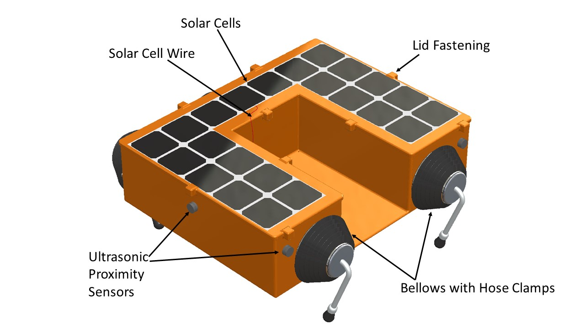
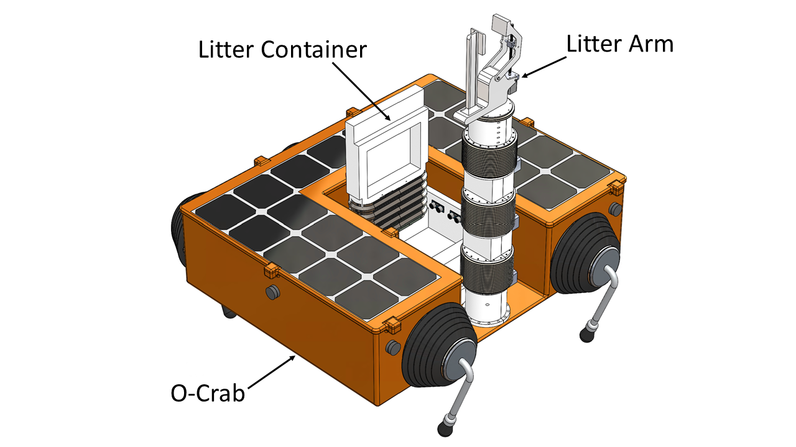
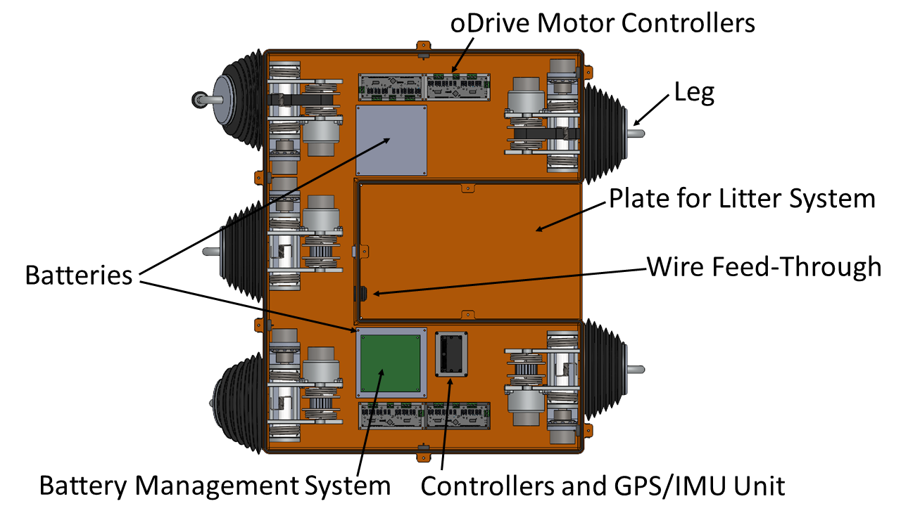
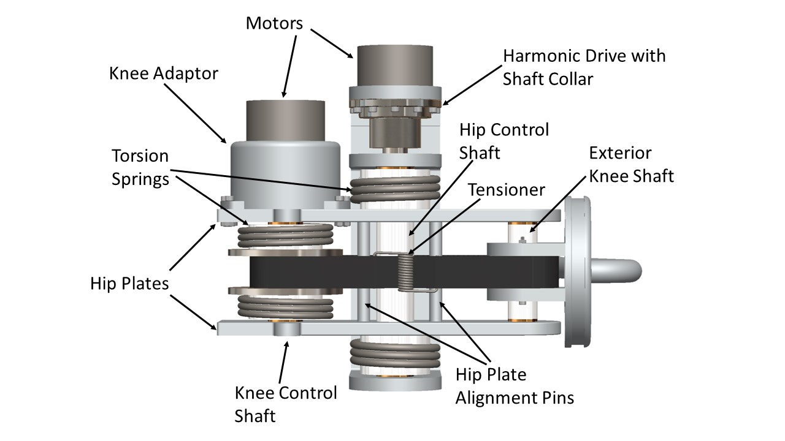
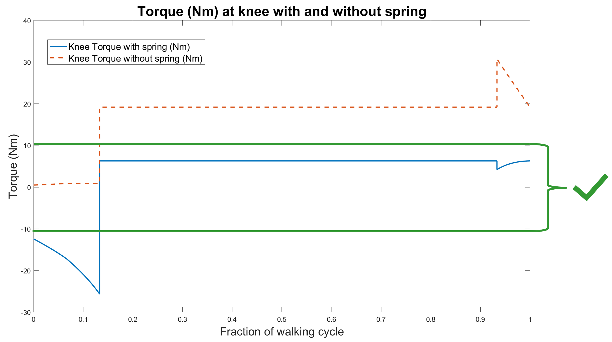
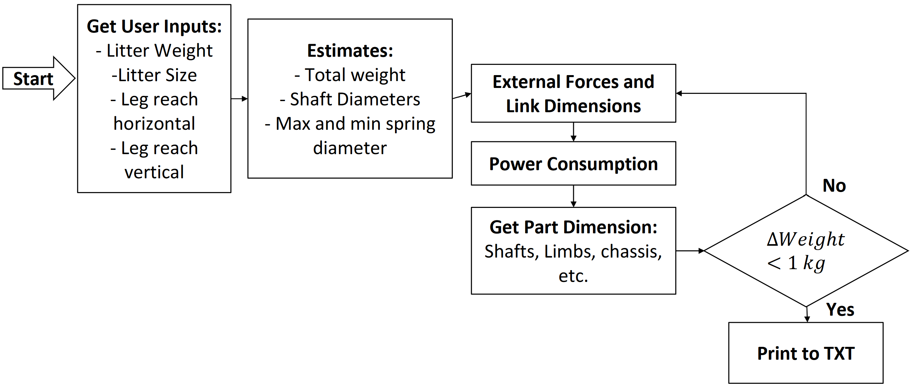
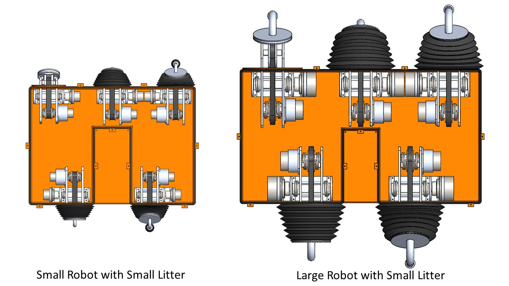

O Crab
Senior Year Design Project
September 2019 - December 2019
For our senior year design project, we created the O-Crab, a biologically inspired robot designed to navigate beaches and waterfront environments collecting litter. We were responsible for the locomotion system and chassis, while another team designed the arm and litter box.
Weatherproofing
The chassis is made of acrylic, as it is salt and UV resistant, and surprisingly sturdy. Bellows cover the legs, preventing salt and water from entering the chassis. A gasket shown in the top view seals the lid and a wire feed-through passes wires for the solar cells and litter arm into the chassis.
Walking
Each of the five legs has 2 degrees of freedom, with a joint at the hip and a joint at the knee. The actuators for both are placed inside the robot, with the knee motor connected to the knee shaft using a belt and pulley system.
The robot turns by moving the legs on one side faster than the other side, much like a tank. DC motors and Harmonic Drive CSD component sets are used to generate and transmit torque. Torsion springs were added to the shafts to bring the torque down while the foot is on the ground (the long, flat stretch of both lines). Once below the backdriving limit of the Harmonic Drives (green line), the springs and drives hold the robot up without the motors expending any energy.
Parametrization
One of our goals for this project was to make the robot scaleable; the user can input different values of leg reach and litter weight, and the robot will scale accordingly. Our procedure is simple; first, the program starts with an initial prediction of the robot dimensions and weight. External forces, power consumption, and internal stresses are calculated, and part dimensions are calculated to meet their minimum safety factors. Their masses are calculated, and the process repeats until the total mass stops changing. The process is outlined in the flowchart below.
The robot can scale between half a meter to a meter in length, between 30kg and 90kg, and with leg reaches varying from 0.1 to 0.7m.
Reports and Links
The source code for the reports (LaTeX) and parametrization (MATLAB) can be found on [Github](https://github.com/joshuaoreilly/MCG4322-capstone). The Capstone Report provides a summary of the entire project. The CAD models can be downloaded from [GrabCAD](https://grabcad.com/library/o-crab-1).
Credits
This project was completed alongside my amazing team
- Marc-André Arsenault
- Mathieu Carroll
- Alexane Lahaie
I would like to thank Dr. Lanteigne and Philippe Kanz for their guidance throughout the semester. (I'll add links to everyone's online profiles once I figure out how to parse properly with wssg.